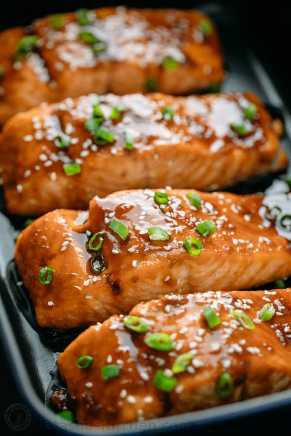

Home
Teriyaki Salmon

Description
This Teriyaki Salmon recipe might be a little pricier than some of my usual meals, but it’s worth every penny. Honestly, this is some of the best salmon I’ve ever made (I’ve been coming back to this recipe since I first posted it in 2011!!), and it’s just so easy. The salmon turns out tender and delicate, coated in a sticky teriyaki-style glaze that tastes like it came straight from a restaurant. And the kicker? A drizzle of creamy sriracha mayo on top that ties it all together.
Ingredients
- ¼ cup soy sauce
- 2 Tbsp water
- ½ Tbsp toasted sesame oil
- 1 inch fresh ginger
- ½ tsp minced garlic
- 2 Tbsp brown sugar
- 2 Tbsp rice wine
- 1 tsp corn starch
- 1 lb. salmon filet
- ¼ cup mayonnaise
- 2 Tbsp sriracha
Steps
- Make the teriyaki marinade by whisking together the soy sauce, water, sesame oil, minced garlic, grated ginger, brown sugar, rice wine, and cornstarch.
- Cut the salmon filet into four equal sized portions and place in a large zip top bag. Pour the marinade over top, remove as much air as possible and close up the bag. Refrigerate for at least 30 minutes, mixing the bag occasionally to redistribute the marinade.
- Heat a large, well oiled skillet over medium/high heat. It’s a good idea to use a non-stick surface here too just to be safe (teflon or well seasoned cast iron). The teriyaki sauce gets thick and sticky when cooked. Once the skillet is hot, add the fish, face down. Cook on all four sides for 2-3 minutes each side or until the fish has reached your desired doneness.
- In a small bowl, mix together the sriracha hot sauce and mayonnaise. Serve the fish with a dollop of sriracha mayo on top!